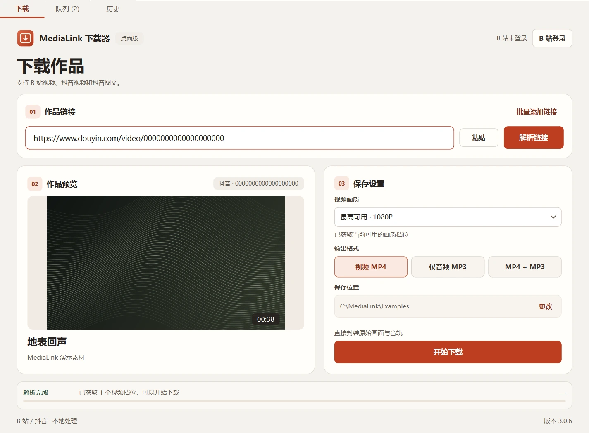
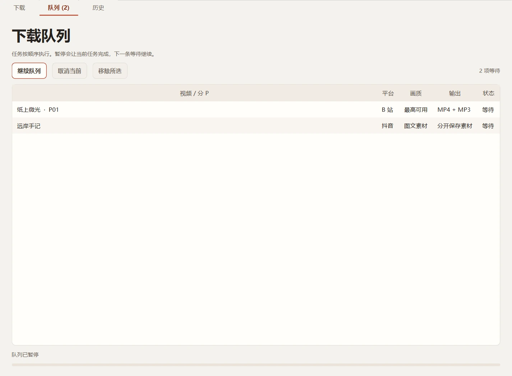
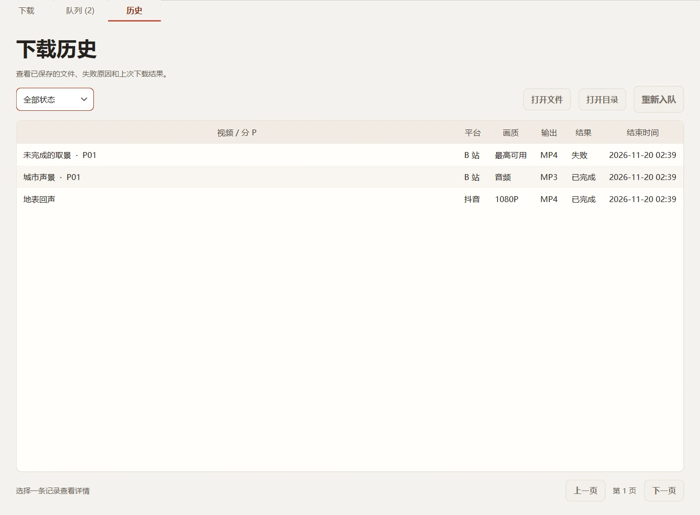

两个平台，一个入口。
粘贴哔哩哔哩或抖音的链接、分享文本或短链。支持 B 站普通视频及分 P、抖音普通视频及图文。
抖音解析使用已安装的 Microsoft Edge。遇到网页登录或验证要求时，解析可能失败。

Capabilities
从输入链接到整理文件，画质、输出和任务进度都在同一个窗口里。
粘贴哔哩哔哩或抖音的链接、分享文本或短链。支持 B 站普通视频及分 P、抖音普通视频及图文。
抖音解析使用已安装的 Microsoft Edge。遇到网页登录或验证要求时，解析可能失败。
手动选择档位，或在任务执行时获取最高可用画质。B 站扫码可获取账号有权使用的档位。
一次导入最多 50 条两平台混合链接。队列支持暂停后续任务、继续、取消当前项和移除等待项。可在历史中筛选结果、打开文件或重新入队。
普通视频可存为 MP4、导出 MP3，或同时保存。抖音静态图文可合成 MP4，也可将图文作品的图片、可用视频片段和配乐分开保存。
Inside MediaLink
从预览到历史，看看 MediaLink 的实际工作界面。


MediaLink v3.0.6 界面实拍。作品、链接与任务记录均为离线演示数据。
How it works
复制作品链接或分享文本，粘贴到 MediaLink。
点击「解析链接」，查看作品预览和当前可用选项。
根据作品类型选择画质和输出方式，并确认保存位置。
加入下载队列，在历史中查看结果和打开文件。
GitHub 项目
MediaLink 起于实际使用中的一个需求：少做几次重复操作，就能把需要的视频和音轨保存到本地。项目在 GitHub 公开源代码、开发记录和问题反馈，并持续迭代。
目前尚未完成广泛的跨设备兼容性验证。
在 GitHub 上查看